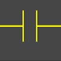
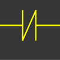
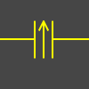
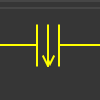

The user-defined add-on has a pair of icons, Return and Call, and a C template has been provided so that users can write their own code to link Call and Return.
The trigger switch signal comes from the ladder diagram program, c calls start to execute a program, and the result can be fed back to the return icon. That is, when the ladder triggers the sensor device, the result is returned and allows the ladder program to perform the next step.
| Icon | Function description | Source | Sink |
|---|---|---|---|
|  | Normal open | Channel /Group | Channel /Group |
|  | Normal open | Channel /Group | Channel /Group |
|  | Normal open rising edge | Channel /Group | Channel /Group |
|  | Normal open falling edge | Channel /Group | Channel /Group |
| 4 channel Analog input | RS232 linkup Analog input | Donkey lab. | 0 |
| 2in 2 out channel Analog | RS232 linkup Analog in/out board, fully isolated | Donkey lab. | 0 |
| 8 channel spliter board | RS232 8 channel, spliter | Donkey lab. | 0 |
| User prototype board | Power inlet and USB c linkup to mainboard | Donkey lab. | 0 |